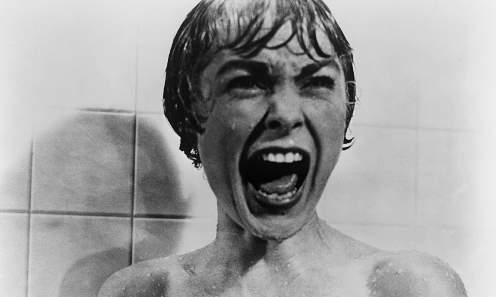
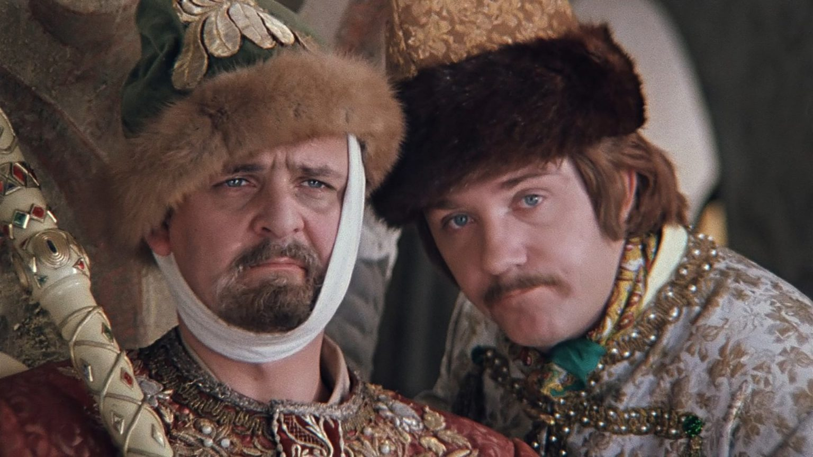

1960-е годы
Олицетворением голливудского кинематографа 1960-х является мюзикл "Вестсайдская история" 1961 г. "Вестсайдская история" - это большой, громкий, зрелищный, красочный
фильм. Именно такое кино стало популярным в кинотеатрах, так как только
такое зрелище могло заставить зрителя оставить появившиеся в каждом доме телевизоры и прийти в кинозал. 1960-е
превратились в эпоху эпичных дорогих блокбастеров, таких как "Спартак" 1960 г. и "Лоуренс Аравийский" 1962 г.
Параллельно с блокбастерами в кино произошел перелом и переход к фильмам, раскрывающим опасные, глубокие, спорные,
внутриличностные, психологические и социальные проблемы. Значимым феноменом стал фильм Альфреда Хичкока "Психо" 1960 г.
Зрители увидели фильм нуар, который превратился в нечто иное. Главная героиня фильма умирает и зрители остаются один на
один с убийцей. Эта лента породила новый стиль в кино, научила кинематографистов создавать ленты, выводящие зрителей из
равновесия. 1960-e это время зарождения хорроров(«Ребёнок Розмари», «Ночь живых мертвецов»). Это золотое время
вестернов(«Хороший, плохой, злой», «На пригоршню долларов больше»). Среди фильмов,
задающихся вопросом о том, что значит
быть хорошим человеком, особое место заняли ленты, поднявшие вопрос гражданских прав в Америке. "Убить пересмешника"
1962 г. был доброй фантазией на эту тему. Во второй половине 1960-х начался переход к зрелому кинематографу, который
расцветет в 1970-х. В фильме "Кто боится Вирджинии
Вульф?" 1966 г. зрители впервые услышали грубую и обсценную лексику.
В эти годы началась карьера великого режиссёра Стэнли Кубрика. С этого десятилетия начался золотой век советского
кинематографа. Комедии Леонида Гайдая, которые знают все жители постсоветского пространства. Фильмы Климова, Рязанова,
Доннелли – это классика советской комедии. Также нельзя забыть Андрея Тарковского и его картины, глубокие и философские,
которыми вдохновлялись и вдохновляются самые именитые режиссёры.
Кинематограф 1960х годов

1970-е годы
"Последний киносеанс" 1971 г. Питера Богдановича стал фильмом, отразившим главное изменение кинематографа семидесятых. Старое кино 1960-х с его огромными бюджетами умерло. Пришло время низких бюджетов и высокого уровня творчества. Кино стало отражением реалистичного уклада жизни, а не спектаклем на кинопленке. Новое поколение кинематографистов изначально выстраивает свою карьеру с большой долей независимости от крупных компаний. Джордж Лукас и Френсис Форд Коппола создали компанию "American Zoetrope", которая в начал 1970-х была на грани разорения. Большие проблемы были и у компании мейджора Парамаунт. Тогда студия решила дать шанс новым режиссерским талантам и пригласила их экранизировать популярные книги. Так на свет появились "Крестный отец" 1972 г. и "Крестный отец 2" 1974 г. Успех этих лент заставил студии понять, что на новое жестокое и чувственное кино можно сделать ставку. "Злые улицы" 1973 г. и "Таксист" 1976 г. Мартина Скорсезе продемонстрировали криминальный, суровый мир, в котором сосуществуют самопожертвование и жестокость. Роберт Де Ниро стал некрасивым, неидеальным героем, героем из настоящей жизни, живущим в знакомом зрителю мире. В 1970-е появился Вуди Аллен. Он был первым, автором, который все делал сам - писал сценарий, играл главную роль и режиссировал картину. Его "Любовь и смерть" 1975 г., "Энни Холл" 1977 г., "Манхэттен" 1979 г. и др. были чем-то совершенно новым, инновационным, поднимающим вопросы нравственности и непосредственно обращающимся к зрителю. Такие фильма как "Свит Свитбэк: Песня мерзавца" 1971 г., "Шафт" 1971 г., "Фокси Браун" 1974 г. сформировали жанр "блэксплотейшн". Крутые черные персонажи стали культурным феноменом и дали дорогу черным режиссерам и актерам. Культурный рубеж, который преодолело кино в 1970-е олицетворяет фильм Стивена Спилберга "Челюсти" 1975 г. Эта лента, также как "Крестный отец", была экранизацией успешной книги, в создание которой вложила немало средств студия. Стивен Спилберг поднял хичкоковский саспенс на совершенно новый уровень, увеличил роль музыкального сопровождения и спецэффектов в кинопроизведении. Это был первый блокбастер в истории Голливуда, имевший крупную маркетинговую кампанию. Шокирующими, жестокими, реалистичными фильмами о войне во Вьетнаме и нравственности стали "Охотник на оленей" 1978 г., "Возвращение домой" 1978 г. и "Апокалипсис сегодня" 1979 г. Но уже в 1976 г. вышел вдохновляющий фильм, утверждающий, что страна устроена правильно и благородно следует за правильными целями и мечтами - это конечно же "Рокки". В 1979 г. вышел "Чужой" Ридли Скотта - культовый страшный мистический фильм о монстре, где впервые крутым героем стала женщиной. В 1977 г. вышел новый культурный феномен - "Звездные войны" Джорджа Лукаса. Космоопера, объединившая в себе старые самурайско-вестернские сюжеты с новыми технологиями. Получился трогательный оригинальный фильм о победе добра вопреки всем препятствиям. В советском кинематографе продолжился золотой век. Все творческие деятели не сбавляли обороты и выдавали шедевр за шедевром из года в год. 1970-е годы стали потрясающим временем реорганизации кинобизнеса, формировании новой индустрии, основанной на сближении независимого кинематографа и студийной системы Голливуда. Это было время существенных перемен с точки зрения креатива и изобразительных приемов. Это время нового, умного и изобретательного кино.
Кинематограф 1970х годов
